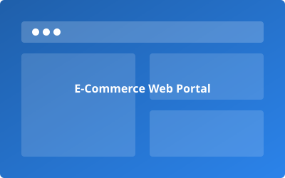
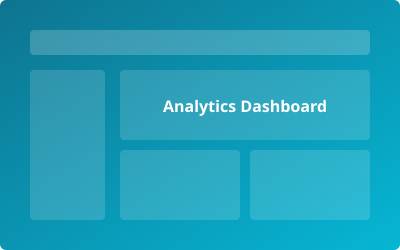
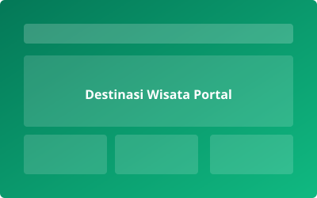
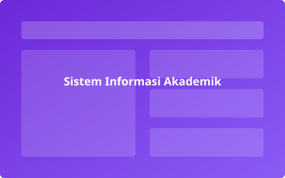

Mahasiswa Pemrograman Web
Teknik Informatika - Universitas Pelita Bangsa
Halo! Selamat datang di halaman profil saya. Saya adalah mahasiswa Program Studi Teknik Informatika di Universitas Pelita Bangsa yang berfokus pada pengembangan aplikasi web modern. Memiliki ketertarikan mendalam dalam rancang bangun antarmuka pengguna (UI/UX), CSS Layouting, serta implementasi standar HTML5 Semantics untuk menghasilkan situs web yang semantik, estetik, dan fungsional.
Deskripsi Diri & Minat Akademik
Praktikum Pemrograman Web pada modul ke-4 ini membahas mengenai teknik penyusunan tata letak website menggunakan Box Element, CSS Float, Clearfix, serta HTML5 Semantic Elements. Pemahaman terhadap konsep-konsep ini sangat fundamental dalam menciptakan arsitektur website yang kokoh sebelum melangkah ke layout modern seperti Flexbox dan CSS Grid.
Portofolio Karya & Proyek Web

E-Commerce Web Portal
Platform katalog penjualan daring dengan tata letak multi-kolom responsif, navigasi kategori produk, dan keranjang belanja berbasis CSS modern.

Analytics Dashboard UI
Perancangan antarmuka panel analitik statistik pengunjung web yang memadukan sidebar widget, card metrics, dan grafik data visual.

Portal Informasi Destinasi Wisata
Website pariwisata daerah yang menampilkan hero banner, galeri featurette tempat wisata, review pengunjung, dan informasi rute peta.

Sistem Informasi Akademik (SIAKAD)
Prototipe portal mahasiswa universitas untuk pengelolaan Kartu Rencana Studi (KRS), transkrip nilai, jadwal perkuliahan, dan pengumuman kampus.
Keahlian & Penguasaan Teknologi
- HTML5 & Semantic Markup (95%)
- CSS3 Layouting (Float, Clearfix, Box-Sizing) (90%)
- Responsive Web Design & Typography (85%)
- Version Control (Git & GitHub) (80%)